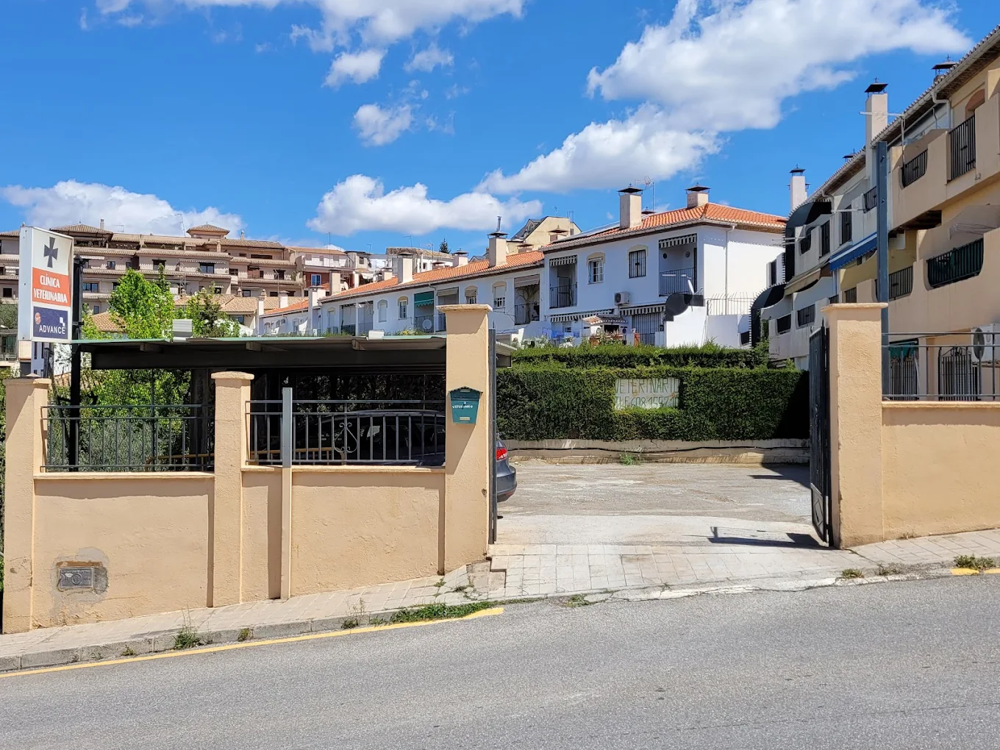

Clínica Veterinaria
Santiago Cortés
Clínica veterinaria de medicina de pequeños animales en Monachil. Atención personalizada, equipamiento moderno y más de 30 años de experiencia en la provincia de Granada.

Atención integral de pequeños animales con equipamiento moderno y diagnóstico inmediato
Planes de vacunación integral para perros, gatos y exóticos. Desparasitación interna y externa. Chequeos geriátricos.
Quirófano completamente equipado para cirugía de tejidos blandos y esterilizaciones con los más altos estándares de seguridad.
Radiología digital de última generación para obtener diagnóstico inmediato sin necesidad de enviar las pruebas a laboratorio externo.
Análisis completos en clínica: sangre, bioquímica, urianálisis y tests rápidos para enfermedades infecciosas de alta prevalencia.
Implantación oficial de microchip e inscripción en el registro. Tramitación completa de pasaportes para viajes internacionales con tu mascota.
Venta de piensos de gama alta y dietas de prescripción médica. Productos de higiene, complementos nutricionales y accesorios.
Domingos, festivos y fuera de horario. Llama antes de desplazarte para confirmar disponibilidad.
Foto del veterinario
Dirección y atención clínica personalizada
Santiago Cortés dirige la clínica con la filosofía de que cada mascota merece una atención directa, sin intermediarios. Veterinario colegiado con amplia trayectoria en la provincia de Granada, ha convertido la clínica en un referente para los vecinos de Monachil y municipios limítrofes.
Especializado en medicina de pequeños animales (canina y felina), la clínica cuenta con equipamiento técnico moderno que permite realizar diagnósticos avanzados sin necesidad de derivar a centros de referencia para las pruebas más habituales.
Nuria Gálvez Sánchez
"El mejor veterinario de Granada... Sin duda. Ha tratado a mi perro hasta el final con una profesionalidad y una sabiduría increíble."
Jose Luis Sequea Lozano
"Es el mejor Centro Veterinario. Tiene lo más importante: un veterinario que le gustan los animales, se le nota muchísimo y los trata con mucho amor."
Desi M Carmona
"El mejor veterinario de toda Granada, con diferencia. Calidad-precio inmejorable."
A. B.
"Veterinario experimentado y bueno, que sabe bien lo que hace. Precios muy razonables."
Sergi Canalís Cobos
"Un profesional como pocos. Trato excepcional tanto hacia los animales como hacia los dueños."
Sergio Hernández
"Inmejorable profesional. Muy recomendado. Un veterinario que se preocupa de verdad por el bienestar de los animales."
Estamos en Calle Madrid, 45 · Monachil (Barrio de la Vega), Granada
Atendemos a pacientes de Monachil y toda el área metropolitana sur de Granada
Llama, escribe un email o pásate directamente por la clínica